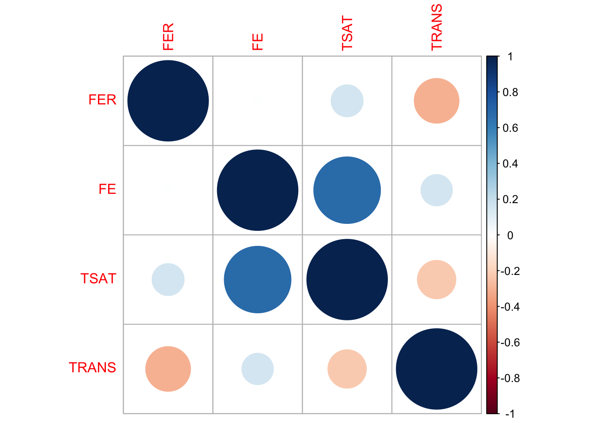

my_seed = 124Data Privacy: Synthetic Data Generation with ‘synthpop’ in R
Enhancing Athlete Privacy and Data Utility With Synthetic Data in Sports Analytics
Abstract
Explore the essentials of synthetic data generation using the ‘synthpop’ package in R, a pivotal technique for safeguarding athlete privacy while maintaining data utility in sports analytics. This lesson delves into creating algorithmic replicas of real-world data, tailored for sports science applications. Learn how synthetic data enables insightful analysis without compromising confidentiality, serving as a cornerstone for ethical data practices in sports and exercise science.
Keywords
Synthetic data, data privacy, data protection, statistical modeling, data simulation, sports analytics, R, synthpop, mice, data imputation, predictive modeling, data evaluation, machine learning, data analysis techniques, correlation analysis, distribution analysis, tidyverse, ggplot2, corrplot.
Lesson’s Level
The level of this lesson is categorized as SILVER.
Lesson’s Main Idea
- Synthetic data generation bridges the gap between maintaining athlete privacy and leveraging comprehensive sports datasets for analytics, enabling the exploration of data-driven insights without compromising confidentiality.
- Through the use of R’s
synthpopandmicepackages, this lesson guides practitioners through creating, evaluating, and employing synthetic datasets that mirror the statistical properties of real-world data, thus equipping them with the ability to conduct robust sports analytics in a privacy-conscious manner.
Dataset Featured In This Lesson
The focal dataset of this lesson encapsulates hematological variables from endurance athletes, comparing pre and post conditions following moderate altitude exposure. Recognizing the sensitive nature of the original data, direct access to it is not feasible. Nevertheless, this lesson navigates through the creation of a synthetic version that mirrors the original dataset’s statistical properties, ensuring confidentiality while facilitating educational exploration. This synthetic dataset is accessible via our specialized speedsR R data package, designed to support your learning journey.
1 Learning Outcomes
By the end of this lesson, you will have developed the ability to:
Understand the Importance of Synthetic Data: Grasp the concept and significance of synthetic data in sports analytics, particularly its role in enhancing privacy and data protection while maintaining the utility of sports datasets.
Prepare Data for Synthetic Generation: Learn to prepare datasets for synthetic data generation, including handling missing values and ensuring data is in the correct format for synthesis, using tools like
miceand R programming techniques.Generate High-Quality Synthetic Data: Master the use of the
synthpoppackage in R to generate synthetic datasets that closely mirror the statistical properties of original datasets, without exposing sensitive information.Evaluate Synthetic Data Quality: Apply a comprehensive suite of evaluation techniques to assess the fidelity of synthetic data, including statistical comparisons, distribution checks, and correlation analysis, ensuring the synthetic data is a reliable stand-in for the original data in sports analytics.
Apply Synthetic Data in Predictive Modeling: Understand how to use synthetic data for predictive modeling tasks, evaluating its performance against real data to confirm its utility in sports and exercise science research and analysis.
Setting a Seed For Randomness
The processes of missing data imputation, synthetic data generation, and model-based evaluation involve random computations. As such, the exact metrics and results you see might vary each time you run the code. To achieve consistent results across multiple runs, the code includes set.seed() functions before each step involving randomness. Make sure to run these set.seed() lines if you wish to replicate the outcomes within your own environment..
2 Introduction: The Role of Synthetic Data in Sports Analytics
2.1 Bridging Privacy and Insight with Synthetic Data
The advancement of sports analytics has ushered in an era where data not only enhances performance and strategy but also raises significant privacy concerns. The use of synthetic data represents a pivotal innovation in this field, offering a solution that preserves the statistical integrity of real-world data while ensuring the anonymity of the individuals involved. This approach enables the detailed analysis of athlete performance, health metrics, and team dynamics without compromising personal confidentiality. Synthetic data generation techniques, ranging from classical statistical methods to sophisticated machine learning models, allow researchers and practitioners to leverage rich, insightful data for advancements in sports science while adhering to ethical standards of privacy and data protection.
2.2 Tools and Methods for Synthetic Data Generation
In the evolving field of synthetic data generation, several libraries stand out for their comprehensive methods and applications, particularly in sports and exercise science. Among them, Synthetic Data Vault (SDV) and synthcity in Python, along with synthpop in R, offer tailored solutions that span classical statistical to advanced machine learning approaches. These tools are instrumental for practitioners aiming to leverage synthetic data for insightful, privacy-conscious analytics.
2.2.1 Synthetic Data Vault (SDV): Python’s Comprehensive Synthetic Data Solution
The Synthetic Data Vault (SDV) is a sophisticated Python library that utilizes a wide range of classical statistical methods, such as Gaussian Copula, and advanced machine and deep learning algorithms, including CTGAN and the Probabilistic Auto-Regressive model. Designed to accurately learn and replicate complex data patterns, SDV supports the generation of synthetic datasets across single tables, multiple connected tables, and sequential data. This capability is especially valuable in sports analytics, facilitating the creation of synthetic data that maintains the statistical properties of original datasets while safeguarding athlete privacy. SDV stands out for its comprehensive approach to synthetic data generation, enabling sports scientists to analyze intricate data relationships and sequences without compromising confidentiality. It is particularly useful for those looking to explore data-driven strategies, performance analytics, and predictive modeling in a secure and privacy-preserving manner.
2.2.2 Synthcity: A Versatile Python Toolkit for Advanced Synthetic Data
synthcity is an innovative Python library that leverages cutting-edge machine and deep learning methods, including GAN-based models like CTGAN and PATEGAN, and VAE-based models like TVAE, to generate synthetic data. It excels in creating data for a wide range of tabular data modalities, from static data to complex time series, making it ideal for sports analytics applications that require nuanced data representations. synthcity is particularly adept at handling fairness, privacy, and data augmentation challenges, providing sports scientists with a platform for ethical data exploration and analysis. Its pluginable architecture and comprehensive set of evaluation metrics allow for custom solutions tailored to the unique demands of sports and exercise science research, including injury prediction models and athlete performance simulations.
2.2.3 Synthpop: Simplifying Synthetic Data Generation in R
synthpop is a user-friendly R package designed for generating synthetic versions of sensitive datasets, thereby facilitating confidentiality and privacy. Utilizing sequential regression modeling, including classification and regression trees (CART), synthpop allows for the detailed customization of the data synthesis process according to the dataset’s unique characteristics. This method is particularly suited for sports analytics where maintaining the statistical integrity of the data—such as relationships between variables—is crucial. synthpop shines in applications where the goal is to produce datasets for exploratory analysis or training purposes, without compromising the privacy of individual athletes. It’s an excellent choice for practitioners in sports and exercise science looking to conduct analyses on athlete performance, team strategies, or health outcomes while ensuring data confidentiality.
By focusing on synthpop for this lesson, we aim to introduce sports and exercise science practitioners to the foundational skills of synthetic data generation within the familiar R programming environment. This decision acknowledges the greater flexibility and customization options offered by Python libraries but opts for the simplicity and direct applicability of synthpop to the practitioners’ existing data analysis workflows.
3 Data import and exploration
We start by loading all the necessary libraries and reading the data from the Hbmass Excel file.
3.1 Data import
# Load required libraries
library(readxl)
library(tidyverse)
library(ggplot2)
library(naniar)
library(mice)
library(corrplot)
library(synthpop)# Reading the Hbmass Excel file and selecting the data sheet
sheets <- excel_sheets("./AHBM_Data.xlsx")
real_data <- read_excel("./AHBM_Data.xlsx", sheet="AHBM_LONG")
# Create an exact copy of the 'real_data' data frame (this might come handy later)
real_data_copy <- real_data3.2 Initial data exploration
To gain an understanding of the loaded dataset, we first conduct an initial exploration of the data.
Descriptive Statistics: Our first step is to examine a summary of key statistical measures. This provides essential insights into central tendencies, data ranges, and other statistical characteristics.
Pairwise Scatter Plots: Subsequently, we visualize how variables interact with each other through scatter plots, which can reveal linear or non-linear relationships.
Histograms: Next, we study the distribution of each variable using histograms. This step helps us identify patterns, such as skewness or normality.
Correlation Matrix: Last but not least, we compute and visualize a correlation matrix. Correlation measures the strength and direction of the linear relationship between two variables. The values range from -1 to 1, where -1 indicates a perfect negative correlation, 1 indicates a perfect positive correlation, and 0 indicates no linear correlation. The size and color of the circles in this matrix signifies the strength and direction of correlations between variables.
# Descriptive statistics
summary(real_data) ID TIME SEX SUP_DOSE BM
Min. : 1.0 Min. :0.0 Min. :0.0000 Min. :0.000 Min. :47.0
1st Qu.: 45.0 1st Qu.:0.0 1st Qu.:0.0000 1st Qu.:1.000 1st Qu.:59.0
Median : 89.5 Median :0.5 Median :1.0000 Median :1.000 Median :65.7
Mean : 89.5 Mean :0.5 Mean :0.5506 Mean :1.022 Mean :66.4
3rd Qu.:134.0 3rd Qu.:1.0 3rd Qu.:1.0000 3rd Qu.:1.000 3rd Qu.:73.0
Max. :178.0 Max. :1.0 Max. :1.0000 Max. :2.000 Max. :97.4
FER FE TSAT TRANS
Min. : 11.80 Min. : 5.80 Min. : 3.10 Min. :1.300
1st Qu.: 43.40 1st Qu.:13.57 1st Qu.:20.00 1st Qu.:2.475
Median : 65.35 Median :17.50 Median :26.00 Median :2.700
Mean : 74.58 Mean :19.68 Mean :28.05 Mean :2.767
3rd Qu.: 98.53 3rd Qu.:24.05 3rd Qu.:34.25 3rd Qu.:3.100
Max. :227.80 Max. :78.30 Max. :88.00 Max. :4.400
NA's :56 NA's :104 NA's :104 NA's :104
AHBM RHBM
Min. : 478.0 Min. : 8.20
1st Qu.: 700.8 1st Qu.:11.50
Median : 848.5 Median :13.20
Mean : 857.6 Mean :12.88
3rd Qu.: 977.2 3rd Qu.:14.40
Max. :1424.0 Max. :17.10
# Pairwise Scatter plots
cont_var_cols <- real_data[, c("BM", "FER", "FE", "TSAT", "TRANS", "AHBM", "RHBM")] # continuous variables columns
pairs(cont_var_cols, pch = 16, cex = 0.6) # pch - plotting character, cex - character expansion
# Distributions
# Create a data frame to store variable names and bin widths
cont_var_distrib <- data.frame(
var = c("BM", "FER", "FE", "TSAT", "TRANS", "AHBM", "RHBM"),
bin_width = c(1.5, 5, 1, 2, 0.1, 25, 0.2)
)
# Loop through the data frame to create plots
for(i in 1:nrow(cont_var_distrib)) {
var_name <- as.character(cont_var_distrib[i, "var"])
bin_w <- cont_var_distrib[i, "bin_width"]
p <- ggplot(real_data, aes_string(x = var_name)) +
geom_histogram(binwidth = bin_w, fill = "skyblue", color = "black") +
labs(title = paste("Distribution of", var_name))
print(p)
}


# Correlation Matrix
cor_matrix <- cor(cont_var_cols, use = "complete.obs") # "complete.obs" means that only complete observations (rows where no variables have missing values) will be used in the calculations
corrplot(cor_matrix, method = "circle")
4 Data missingness
Before we proceed with generating synthetic data with synthpop, it’s really important to check for missing values in the dataset. How we deal with missing data can make a big difference in the quality of our synthetic dataset. Before imputing or handling missing values, it’s essential to understand the nature of the missingness. We first check if there are any missing values in our dataset at all. And if there are any, we visualize where they are in our dataset using the vis_miss() function.
sum(is.na(real_data)) # check how many missing values there are in the dataset[1] 368vis_miss(real_data) # visualize the missingness in the dataset
4.1 Imputation of missing values
From the missingness visualization above, we see that variables FER, FE, TSAT, and TRANS have some values missing. Moreover, there is some structure to the missing data that exhibits the following pattern:
if
FE,TSAT, andTRANSare missing, thenFERcan also occasionally be missing;if
FERis missing,FE,TSAT, andTRANSare never fully observed in those rows.
The pattern above and the fact that FE, TSAT, and TRANS share all rows of missing data suggests a Missing at Random (MAR) mechanism of missingness, at least for these columns. Moreover, the missingness pattern might indicate a hierarchical or dependent relationship between FER and the other three columns, as it seems like the presence of values in FER might be a prerequisite for the presence of values in FE, TSAT, and TRANS.
When the data has structured missingness of MAR type, simple imputation techniques like replacing with mean, median, or mode are often insufficient. These simpler methods do not account for the relationships between variables or the patterns of missingness. That’s why model-based imputation methods like MICE (Multivariate Imputation by Chained Equations) are more appropriate in such cases.
MICE is a robust technique designed to handle complex missing data patterns. Rather than filling in a single value for each missing entry, MICE iteratively updates these values based on a series of regression models that consider other variables in the data. This iterative process is typically run until it converges to stable solutions.
Here’s the process in a nutshell:
Initially, missing values are replaced with simple placeholders (e.g., column mean).
For each variable with missing values, a regression model is fitted where this variable is the dependent variable, and all other variables act as independent variables.
Missing values are then updated with predictions from the respective regression model.
This process is repeated iteratively until the imputed values stabilize.
For continuous variables, Predictive Mean Matching (PMM) is often a method of choice within the MICE framework. PMM works by imputing missing values based on observed data points that have similar predicted values. This preserves the data distribution and relationships between variables.
In brief, PMM:
Identifies a set of observed values whose predicted values are closest to the predicted value for the missing entry.
Randomly picks one from this set to impute the missing value.
By employing MICE with PMM, we can handle missing data effectively while preserving the complex relationships between variables in the original dataset.
In this section, we are using the mice package in R to handle missing values in the FER, FE, TSAT, and TRANS variables. Leveraging the robustness of MICE, we apply the PMM method for these continuous variables to capture the underlying relationships between them.
4.2 Predictor matrix
A predictor matrix is a tool used in the mice package to decide which variables in the dataset will be used to estimate missing values for other variables. In this matrix, each row represents a variable with missing data, and each column represents a possible predictor variable. A value of 1 means the column variable (predictor) will be used to estimate missing values in the row’s variable, while a value of 0 means it won’t be used. Typically, the diagonal of this matrix is set to 0, meaning a variable doesn’t predict itself.
By default, when constructing a predictor matrix in mice, every variable is initially considered as a potential predictor for all other variables. However, mice allows the flexibility to adjust this. In our case, we ensure that variables FER, FE, TSAT, and TRANS are imputed using all other variables as predictors, while explicitly excluding the ID variable from the process.
# Generate an initial predictor matrix using quickpred function from the mice package
predictor_matrix <- mice::quickpred(real_data)
# Print the initial predictor matrix for inspection
print(predictor_matrix) ID TIME SEX SUP_DOSE BM FER FE TSAT TRANS AHBM RHBM
ID 0 0 0 0 0 0 0 0 0 0 0
TIME 0 0 0 0 0 0 0 0 0 0 0
SEX 0 0 0 0 0 0 0 0 0 0 0
SUP_DOSE 0 0 0 0 0 0 0 0 0 0 0
BM 0 0 0 0 0 0 0 0 0 0 0
FER 1 1 1 1 1 0 0 1 1 1 1
FE 1 1 1 1 0 0 0 1 1 1 0
TSAT 0 1 1 1 0 1 1 0 1 0 0
TRANS 1 1 1 1 1 1 1 1 0 1 1
AHBM 0 0 0 0 0 0 0 0 0 0 0
RHBM 0 0 0 0 0 0 0 0 0 0 0# Set predictor flags for columns ("FER", "FE", "TSAT", "TRANS") to 1, indicating they will be used for imputation.
predictor_matrix[c("FER", "FE", "TSAT", "TRANS"), ] <- 1
# Exclude "ID" from the predictor matrix by setting its flag to 0
vars_to_exclude <- c("ID")
predictor_matrix[, vars_to_exclude] <- 0
# Set the diagonal of the predictor matrix to 0, indicating that each variable should not predict itself
diag(predictor_matrix) <- 0
# Print the modified predictor matrix for final inspection
print(predictor_matrix) ID TIME SEX SUP_DOSE BM FER FE TSAT TRANS AHBM RHBM
ID 0 0 0 0 0 0 0 0 0 0 0
TIME 0 0 0 0 0 0 0 0 0 0 0
SEX 0 0 0 0 0 0 0 0 0 0 0
SUP_DOSE 0 0 0 0 0 0 0 0 0 0 0
BM 0 0 0 0 0 0 0 0 0 0 0
FER 0 1 1 1 1 0 1 1 1 1 1
FE 0 1 1 1 1 1 0 1 1 1 1
TSAT 0 1 1 1 1 1 1 0 1 1 1
TRANS 0 1 1 1 1 1 1 1 0 1 1
AHBM 0 0 0 0 0 0 0 0 0 0 0
RHBM 0 0 0 0 0 0 0 0 0 0 04.3 Data imputation with MICE
Once the predictor matrix has been constructed, we create a vector to specify which imputation methods to be used for each variable. For our target variables FER, FE, TSAT, TRANS we set the method to PMM. This approach uses all variables as predictors (excluding ID) but specifically applies PMM only to our target variables, allowing us to benefit from the predictive power of the entire dataset. A random seed is established for reproducibility of the imputation output.
# Initialize a vector of empty strings, the length is the number of columns in the dataset
default_methods <- rep("", ncol(real_data))
# Name the vector elements with the names of the columns in real_data
names(default_methods) <- colnames(real_data)
# Specify the PMM imputation method for the variables to be imputed
default_methods[c("FER", "FE", "TSAT", "TRANS")] <- "pmm"
# Set seed for reproducibility
set.seed(my_seed)
# Run MICE to perform multiple imputations: m=5 is the number of imputed datasets, maxit=50 is maximum iterations
imputed_data <- mice::mice(real_data, m = 5, method = default_methods, predictorMatrix = predictor_matrix, maxit = 50)
# View the final predictor matrix
print(imputed_data$predictorMatrix)4.4 Evaluating MICE imputed data quality
After imputing the missing values, it’s essential to validate the output. To ensure that the imputed data accurately reflects relationships and structures of the original dataset, we perform several checks. These include verifying the hierarchical structure, comparing the distributions of the original and imputed data, assessing correlations, and contrasting the value ranges in both the original and imputed datasets.
4.4.1 Verify hierarchical structure
If the hierarchical structure is maintained, the check below should return 0. This means that the imputation has respected the hierarchical structure of the original dataset.
completed_data_subset <- complete(imputed_data, 1)[, c("FER", "FE", "TSAT", "TRANS")] # Extract one of the imputed datasets and select only the target variables
# Ensure that there are no rows where FER is missing and the other three columns (FE, TSAT, TRANS) are observed
sum(is.na(completed_data_subset$FER) & (!is.na(completed_data_subset$FE) | !is.na(completed_data_subset$TSAT) | !is.na(completed_data_subset$TRANS)))[1] 04.4.2 Distributions check
To evaluate the quality of our imputed data, we visualize and compare the distributions of imputed and observed values for each variable. Ideally, the distributions should match closely, indicating that the imputation process has successfully preserved the data’s original characteristics without introducing significant biases.
# Create a subset of the original data that contains only the variables with imputed values
subset_real_data <- real_data[, c("FER", "FE", "TSAT", "TRANS")]
# Create a data frame for variables that have imputed values to store the variable names and bin widths
cont_var_distrib <- data.frame(
var = c("FER", "FE", "TSAT", "TRANS"),
bin_width = c(5, 1, 2, 0.1)
) # continuous variables distributions
# Loop through the data frame to create plots
for(i in 1:nrow(cont_var_distrib)) {
var_name <- as.character(cont_var_distrib[i, "var"])
bin_w <- cont_var_distrib[i, "bin_width"]
p <- ggplot() +
geom_histogram(data = completed_data_subset, aes_string(x = var_name), binwidth = bin_w, fill = "red", alpha = 0.5, position = "identity") +
geom_histogram(data = subset_real_data, aes_string(x = var_name), binwidth = bin_w, fill = "blue", alpha = 0.5, position = "identity") +
labs(title = paste("Distribution of", var_name, ": Imputed (Red) vs. Observed (Blue)"))
# Setting 'position = "identity"' allows the histograms to overlap, facilitating easy comparison
print(p)
}


4.4.3 Correlations Check
To make sure the relationships between variables in the imputed data are consistent with the original data, we compare the correlation matrices — one from the original data and one from the imputed data. The correlations don’t have to match exactly, but they should be reasonably close. We visualize these using correlation plots, where circle size and color represent the strength and direction of the correlation, respectively. If the plots look reasonably similar, it suggests that the imputation has preserved the relationships between variables. If there are significant differences, it might be a sign to investigate further or consider alternative imputation methods or parameters.
# Compare the correlation matrices to ensure that the relationships between variables in the imputed data are consistent with the original data
cor_matrix_imputed <- cor(completed_data_subset, use = "complete.obs")
cor_matrix_original <- cor(subset_real_data, use = "complete.obs")
# View the correlation matrices
print(cor_matrix_imputed) FER FE TSAT TRANS
FER 1.000000000 0.009181825 0.1580852 -0.3080575
FE 0.009181825 1.000000000 0.6839611 0.1524052
TSAT 0.158085229 0.683961088 1.0000000 -0.2273167
TRANS -0.308057485 0.152405195 -0.2273167 1.0000000print(cor_matrix_original) FER FE TSAT TRANS
FER 1.000000000 0.002723024 0.1431203 -0.2641657
FE 0.002723024 1.000000000 0.7088081 0.1384340
TSAT 0.143120333 0.708808074 1.0000000 -0.2131533
TRANS -0.264165721 0.138433992 -0.2131533 1.0000000# Visualize the correlations in the original data
corrplot(cor_matrix_original, method = "circle")
# Visualize the correlations in the imputed data
corrplot(cor_matrix_imputed, method = "circle")
Both the original and imputed data show similar correlation patterns among the target variables, suggesting that the imputation has preserved the relationships between variables to a large extent.
4.4.4 Assessing value range consistency
It’s a good practice to ensure that the imputed values fall within a reasonable range, especially when compared to the original data. By comparing the “Original_Min” and “Original_Max” rows to the “Imputed_Min” and “Imputed_Max” rows, we check that the imputed values for each variable fall within the expected range.
# Calculate the range of values for each variable in the original data, ignoring NA values
original_ranges <- sapply(subset_real_data, range, na.rm = TRUE)
# Calculate the range of values for each variable in the imputed data, ignoring NA values
imputed_ranges <- sapply(completed_data_subset, range, na.rm = TRUE)
# Combine the ranges from both original and imputed data into a single data frame for easy comparison
ranges_df <- rbind(original_ranges, imputed_ranges)
# Rename the rows for clarity and print the output
rownames(ranges_df) <- c("Original_Min", "Original_Max", "Imputed_Min", "Imputed_Max")
print(ranges_df) FER FE TSAT TRANS
Original_Min 11.8 5.8 3.1 1.3
Original_Max 227.8 78.3 88.0 4.4
Imputed_Min 11.8 5.8 3.1 1.3
Imputed_Max 227.8 78.3 88.0 4.44.5 Replacing missing original data with imputed columns
Now we are ready to merge the imputed data with the original dataset. After this step, the original dataset real_data will no longer have any missing values in the columns FER, FE, TSAT, and TRANS.
# Replace the columns with missing values in the original dataset with the imputed ones
real_data[, c("FER", "FE", "TSAT", "TRANS")] <- completed_data_subset[, c("FER", "FE", "TSAT", "TRANS")]5 Synthetic data generation
To generate high-quality synthetic data, the original dataset must first be adequately prepared. This preparation could entail handling missing values, encoding categorical variables, and normalizing numerical ones. In our case, the only necessary preprocessing was the management of missing values. With that task completed, we’re ready to generate synthetic data that mirrors the characteristics of the original dataset. The synthpop package in R allows us to generate synthetic data that maintains the statistical attributes of the original set without exposing any sensitive information.
In the synthetic data generation process using the synthpop package, the data type of each variable is crucial. In our dataset, the variables TIME, SEX, and SUP_DOSE are categorical but have numerical values with either two or three levels. To ensure synthpop recognizes them as categorical, we convert these variables into factors using the as.factor() function in R.
We then define the ‘visit sequence’ via the visit.sequence parameter. This sequence, comprising the order in which variables are synthesized, is essential because a variable can only be predicted by those synthesized earlier in the sequence. In our R code, we specify the visit.sequence such that TIME comes first, followed by SEX, SUP_DOSE and so on.
The method parameter specifies how each variable is synthesized. For the variables TIME, SEX, and SUP_DOSE we use the ‘sample’ method. This is because they are the first in the visit sequence and do not have preceding predictors. These variables’ synthetic values are obtained through random sampling with replacement from the original data. We intentionally avoid using the ‘cart’ method for these variables to retain their original distributions.
For all other variables, the ‘cart’ (Classification and Regression Trees) method is used. This is the default method for variables with preceding predictors in the visit.sequence.
The predictor.matrix defines which variables act as predictors for each target variable. A 1 in this matrix indicates the column variable will be a predictor for the row variable. Initially, we let syn() create a default predictor matrix. However, we manually adjust this matrix to ensure that variables like TIME, SEX, and SUP_DOSE are also used as predictors for other variables in the synthetic data.
Variables with an empty method ("") in the method parameter are neither synthesized nor used as predictors. This ensures that they are excluded from the synthesis process altogether, but their original values are kept in the synthetic data.
After setting up these configurations, we run the syn() function again, but with our manually adjusted predictor matrix. This ensures that the synthetic data reflects the relationships and distributions found in the original dataset, while also safeguarding any sensitive information.
Overall, synthetic data generation is a multistep, configurable process that aims to produce data that statistically mirrors the original dataset.
# Fix the pseudo random number generator seed and make the results reproducible
my.seed <- my_seed
# Convert 'TIME' to factor
real_data$TIME <- as.factor(real_data$TIME)
# Convert 'SEX' to factor
real_data$SEX <- as.factor(real_data$SEX)
# Convert 'SUP_DOSE' to factor
real_data$SUP_DOSE <- as.factor(real_data$SUP_DOSE)
# Check the structure of the data frame to confirm the conversion
# As you can see from the table below, variables TIME, SEX, and SUP_DOSE have been converted into factors
str(real_data)tibble [356 × 11] (S3: tbl_df/tbl/data.frame)
$ ID : num [1:356] 1 2 3 4 5 6 7 8 9 10 ...
$ TIME : Factor w/ 2 levels "0","1": 1 1 1 1 1 1 1 1 1 1 ...
$ SEX : Factor w/ 2 levels "0","1": 2 2 1 2 2 1 2 2 2 2 ...
$ SUP_DOSE: Factor w/ 3 levels "0","1","2": 1 1 1 1 1 1 1 1 1 1 ...
$ BM : num [1:356] 77.1 65.4 53 63.5 60.2 59.2 65.7 67.9 75.1 61.5 ...
$ FER : num [1:356] 161 169 228 202 176 ...
$ FE : num [1:356] 22.1 15.3 17.5 14.4 25.3 ...
$ TSAT : num [1:356] 36 25 31 22 36 39 25 9 26 30 ...
$ TRANS : num [1:356] 2.7 2.7 2.5 2.9 2.6 2.4 3.1 3.4 2.7 2.4 ...
$ AHBM : num [1:356] 1005 876 782 909 744 ...
$ RHBM : num [1:356] 13 13.4 14.8 14.3 12.4 12.4 13.8 12.9 14.6 14 ...# Define the initial visit sequence and methods for synthesis
visit.sequence.ini <- c(5, 6, 7, 8, 9, 10)
method.ini <- c("", "sample", "sample", "sample", "cart", "cart", "cart", "cart", "cart", "cart", "") #polyreg
# Run initial synthesis
# You'll see a warning "Method "cart" is not valid for a variable without predictors (BM) Method has been changed to "sample" ". This is normal as, according to the default predictor matrix, variable BM doesn't have predictors yet, and therefore method 'cart' can't be used for this variable. This is fixed below where we adjust the predictor matrix.
synth_data.ini <- syn(data = real_data, visit.sequence = visit.sequence.ini, method = method.ini, m = 0, drop.not.used = FALSE)
Method "cart" is not valid for a variable without predictors (BM)
Method has been changed to "sample"
Variable(s): ID, TIME, SEX, SUP_DOSE, RHBM not synthesised or used in prediction.
CAUTION: The synthesised data will contain the variable(s) unchanged.# Display the default predictor matrix
synth_data.ini$predictor.matrix ID TIME SEX SUP_DOSE BM FER FE TSAT TRANS AHBM RHBM
ID 0 0 0 0 0 0 0 0 0 0 0
TIME 0 0 0 0 0 0 0 0 0 0 0
SEX 0 0 0 0 0 0 0 0 0 0 0
SUP_DOSE 0 0 0 0 0 0 0 0 0 0 0
BM 0 0 0 0 0 0 0 0 0 0 0
FER 0 0 0 0 1 0 0 0 0 0 0
FE 0 0 0 0 1 1 0 0 0 0 0
TSAT 0 0 0 0 1 1 1 0 0 0 0
TRANS 0 0 0 0 1 1 1 1 0 0 0
AHBM 0 0 0 0 1 1 1 1 1 0 0
RHBM 0 0 0 0 0 0 0 0 0 0 0# Customize the predictor matrix
predictor.matrix.corrected <- synth_data.ini$predictor.matrix
rows_to_change <- c("TIME", "SEX", "SUP_DOSE", "BM", "FER", "FE", "TSAT", "TRANS", "AHBM")
cols_to_change <- c("TIME", "SEX", "SUP_DOSE", "BM", "FER", "FE", "TSAT", "TRANS", "AHBM")
predictor.matrix.corrected[rows_to_change, cols_to_change] <- 1
diag(predictor.matrix.corrected) <- 0
predictor.matrix.corrected ID TIME SEX SUP_DOSE BM FER FE TSAT TRANS AHBM RHBM
ID 0 0 0 0 0 0 0 0 0 0 0
TIME 0 0 1 1 1 1 1 1 1 1 0
SEX 0 1 0 1 1 1 1 1 1 1 0
SUP_DOSE 0 1 1 0 1 1 1 1 1 1 0
BM 0 1 1 1 0 1 1 1 1 1 0
FER 0 1 1 1 1 0 1 1 1 1 0
FE 0 1 1 1 1 1 0 1 1 1 0
TSAT 0 1 1 1 1 1 1 0 1 1 0
TRANS 0 1 1 1 1 1 1 1 0 1 0
AHBM 0 1 1 1 1 1 1 1 1 0 0
RHBM 0 0 0 0 0 0 0 0 0 0 0# Generate synthetic data using the corrected predictor matrix
# You may encounter warnings like "Not synthesised predictor FER removed from predictor.matrix for variable BM." This is expected behavior. Variables are synthesized one-by-one and can't serve as predictors until they've been synthesized. As a result, only the last variable to be synthesized, AHBM, doesn't produce this warning because all its predictors have already been synthesized by that point.
synth_data.corrected <- syn(data = real_data, visit.sequence = visit.sequence.ini, method = method.ini, predictor.matrix = predictor.matrix.corrected, seed = my.seed)Not synthesised predictor FER removed from predictor.matrix for variable BM.
Not synthesised predictor FE removed from predictor.matrix for variable BM.
Not synthesised predictor FE removed from predictor.matrix for variable FER.
Not synthesised predictor TSAT removed from predictor.matrix for variable BM.
Not synthesised predictor TSAT removed from predictor.matrix for variable FER.
Not synthesised predictor TSAT removed from predictor.matrix for variable FE.
Not synthesised predictor TRANS removed from predictor.matrix for variable BM.
Not synthesised predictor TRANS removed from predictor.matrix for variable FER.
Not synthesised predictor TRANS removed from predictor.matrix for variable FE.
Not synthesised predictor TRANS removed from predictor.matrix for variable TSAT.
Not synthesised predictor AHBM removed from predictor.matrix for variable BM.
Not synthesised predictor AHBM removed from predictor.matrix for variable FER.
Not synthesised predictor AHBM removed from predictor.matrix for variable FE.
Not synthesised predictor AHBM removed from predictor.matrix for variable TSAT.
Not synthesised predictor AHBM removed from predictor.matrix for variable TRANS.
Variable(s): ID, RHBM not synthesised or used in prediction.
CAUTION: The synthesised data will contain the variable(s) unchanged.
Synthesis
-----------
BM FER FE TSAT TRANS AHBM# Update 'RHBM' values in synthetic data
synth_data.corrected$syn$RHBM <- synth_data.corrected$syn$AHBM / synth_data.corrected$syn$BM
# Final synthetic data
synth_data <- synth_data.corrected$syn6 Synthetic data evaluation
Evaluating the quality of synthetic data is essential to ensure its reliability for further analyses. After generating synthetic data, it’s critical to compare its distributions and relationships between the variables to those in the original dataset. The goal is to assess how closely the synthetic data mimics the statistical properties of the real data.
6.1 Compare() function
For the initial quality check, we utilize the compare() function from the synthpop package. This function allows for a side-by-side statistical comparison between the synthetic and original data. By setting the stat parameter to “counts,” we obtain a count-based statistical summary for each selected variable. This is a valuable first step for gauging how well the synthetic dataset replicates the distribution of these variables in the original dataset.
# Use the compare() function from the synthpop package to compare the target variables from the synthetic and real datasets
real_data_subset <- real_data[, c("BM", "FER", "FE", "TSAT", "TRANS", "AHBM")]
synth_data_subset <- synth_data[, c("BM", "FER", "FE", "TSAT", "TRANS", "AHBM")]
compare(synth_data_subset, real_data_subset, stat = "counts") # The stat parameter is set to "counts" to get count-based statistics for each variable in the selected subsets
Comparing counts observed with synthetic
Press return for next variable(s): 
Selected utility measures:
pMSE S_pMSE df
BM 0.000562 0.799911 4
FER 0.000283 0.402618 4
FE 0.000289 0.412111 4
TSAT 0.001189 1.692725 4
TRANS 0.001268 1.804945 4
AHBM 0.000163 0.231955 4The output from the compare() function provides utility measures, such as pMSE (Propensity Score Mean Squared Error) and S_pMSE (Scaled Propensity Score Mean Squared Error). These metrics evaluate the quality of the synthetic data when compared to the original data.
pMSE: This measure quantifies how well the synthetic data reproduces the relationships between variables found in the real data. Lower pMSE values suggest a better approximation, meaning that the fit of the models on the real and synthetic data is similar. All the variables in our case have pMSE values close to zero, which is a positive indication of the quality of the synthetic data.
S_pMSE: This is the pMSE divided by a scale factor, often the mean squared error of the model fit to the real data. It offers a relative measure of fit; lower S_pMSE values generally indicate better approximation quality. In our case, the S_pMSE values for all variables are low, reinforcing the quality of the synthetic data.
df: This represents the degrees of freedom for the statistical tests comparing the real and synthetic data. Here, it’s 4 for all variables. A higher number of degrees of freedom usually signifies a more flexible model, but it can also risk overfitting.
In summary, both the pMSE and S_pMSE values for all variables are low, indicating that the synthetic data closely mimics the relationships between variables in the original data.
6.2 Visual Comparison
We can also visualize the distributions of the target variables from both the real and synthetic datasets for a more intuitive comparison. By examining these histograms, we can get a visual sense of how closely the synthetic data approximates the real dataset.
# Visualize both real and synthetic data for comparison
# Create a data frame to store variable names and bin widths
cont_var_distrib <- data.frame(
var = c("BM", "FER", "FE", "TSAT", "TRANS", "AHBM", "RHBM"),
bin_width = c(1.5, 5, 1, 2, 0.1, 25, 0.2)
)
# Loop through the data frame to create plots
for(i in 1:nrow(cont_var_distrib)) {
var_name <- as.character(cont_var_distrib[i, "var"])
bin_w <- cont_var_distrib[i, "bin_width"]
p <- ggplot() +
geom_histogram(data = real_data, aes_string(x = var_name), binwidth = bin_w, fill = "blue", alpha = 0.5, position = "identity") +
geom_histogram(data = synth_data, aes_string(x = var_name), binwidth = bin_w, fill = "red", alpha = 0.5, position = "identity") +
labs(title = paste("Distribution of", var_name, ": Real (Blue) vs. Synthetic (Red)"))
print(p)
}


6.3 Descriptive statistics
The summary() function provides a convenient way for quickly reviewing and comparing the descriptive statistics of both the synthetic and real datasets. With this function we can obtain key summary metrics like mean, median, and quartiles.
# Compare descriptive statistics of the real and synthetic datasets
summary(real_data[, cont_var_distrib$var]) BM FER FE TSAT
Min. :47.0 Min. : 11.80 Min. : 5.80 Min. : 3.10
1st Qu.:59.0 1st Qu.: 41.88 1st Qu.:14.40 1st Qu.:19.00
Median :65.7 Median : 63.30 Median :17.90 Median :25.00
Mean :66.4 Mean : 73.15 Mean :20.06 Mean :27.26
3rd Qu.:73.0 3rd Qu.: 96.75 3rd Qu.:25.00 3rd Qu.:33.00
Max. :97.4 Max. :227.80 Max. :78.30 Max. :88.00
TRANS AHBM RHBM
Min. :1.300 Min. : 478.0 Min. : 8.20
1st Qu.:2.500 1st Qu.: 700.8 1st Qu.:11.50
Median :2.800 Median : 848.5 Median :13.20
Mean :2.819 Mean : 857.6 Mean :12.88
3rd Qu.:3.100 3rd Qu.: 977.2 3rd Qu.:14.40
Max. :4.400 Max. :1424.0 Max. :17.10 summary(synth_data[, cont_var_distrib$var]) BM FER FE TSAT
Min. :47.00 Min. : 12.30 Min. : 5.80 Min. : 9.00
1st Qu.:59.00 1st Qu.: 43.38 1st Qu.:14.50 1st Qu.:19.00
Median :66.20 Median : 61.85 Median :18.20 Median :26.00
Mean :66.75 Mean : 71.40 Mean :20.33 Mean :27.08
3rd Qu.:73.10 3rd Qu.: 92.83 3rd Qu.:25.40 3rd Qu.:32.00
Max. :97.40 Max. :227.80 Max. :78.30 Max. :88.00
TRANS AHBM RHBM
Min. :1.300 Min. : 478.0 Min. : 7.979
1st Qu.:2.500 1st Qu.: 700.8 1st Qu.:11.493
Median :2.700 Median : 861.5 Median :13.031
Mean :2.802 Mean : 861.8 Mean :12.880
3rd Qu.:3.100 3rd Qu.: 978.0 3rd Qu.:14.352
Max. :4.100 Max. :1424.0 Max. :17.526 The descriptive statistics of the real and synthetic data show close alignment across all key metrics including minima, maxima, quartiles, median, and mean for each variable. This indicates that the synthetic data is a reliable approximation of the real data, effectively capturing its range, spread, and central tendencies.
6.4 Statistical comparison: Kolmogorov-Smirnov test
To further ensure that synthetic data closely resembles the original data, it’s crucial to compare their distributions more quantitatively. The Kolmogorov-Smirnov (K-S) test is a non-parametric test that gauges if two datasets come from the same distribution. The K-S test yields two main metrics: the D-statistic and the p-value. The D-statistic measures the maximum difference between the cumulative distributions of the datasets; a smaller D-value suggests the datasets are similar. The p-value, on the other hand, gives us the probability that the observed differences could occur by random chance. A high p-value (usually above 0.05) indicates that the datasets are statistically similar, while a low p-value suggests they are different.
# Initialize an empty data frame to store the results of the K-S test
ks_results <- data.frame(
Variable = character(0),
D_statistic = numeric(0),
p_value = numeric(0)
)
# Loop through each variable in the 'var' column of 'cont_var_distrib' to perform the K-S test
for (var in cont_var_distrib$var) {
# Run the K-S test on each variable and store the results in 'ks_test_result'
ks_test_result <- ks.test(real_data[[var]], synth_data[[var]])
# Add the results (Variable name, D-statistic, and p-value) to the 'ks_results' data frame
ks_results <- rbind(ks_results, data.frame(
Variable = var,
D_statistic = ks_test_result$statistic,
p_value = ks_test_result$p.value
))
}
# Print the K-S test results
print(ks_results, row.names = FALSE) Variable D_statistic p_value
BM 0.04494382 0.8647785
FER 0.03651685 0.9715491
FE 0.04494382 0.8647785
TSAT 0.04213483 0.9100993
TRANS 0.04213483 0.9100993
AHBM 0.02247191 0.9999908
RHBM 0.03370787 0.9874983The K-S test results show low D-statistic values and high p-values for all variables, suggesting that the distributions of the synthetic and real data are not significantly different. This further reinforces the conclusion that the synthetic data closely approximates the real data across all examined variables.
6.5 Correlation structure
To evaluate the integrity of the relationships between variables in synthetic data, it’s crucial to assess whether it maintains the original data’s correlation structure. Correlation matrices are instrumental for this. Each matrix is filled with correlation coefficients that range from -1 to 1. The diagonal always contains 1s, as each variable is perfectly correlated with itself. Off-diagonal values indicate the strength and direction of the relationship between variable pairs. A value close to 1 indicates a strong positive correlation, while a value near -1 suggests a strong negative correlation. A value of 0 indicates no correlation. By comparing the correlation matrices of the real and synthetic datasets, one can visually gauge how well the synthetic data captures these relationships between variables. We visualize these using correlation plots, where circle size and color represent the strength and direction of the correlation, respectively.
# Check if the synthetic data maintains the correlation structure of the original data
# Extract relevant variable names from cont_var_distrib DataFrame
selected_vars <- as.character(cont_var_distrib$var)
# Filter the original dataset to include only the selected variables
real_data_selected <- real_data[, selected_vars]
# Compute correlation matrices
cor_real_selected <- cor(real_data_selected, use = "complete.obs")
cor_synthetic_selected <- cor(synth_data[, selected_vars], use = "complete.obs")
# Display correlation matrices
print(cor_real_selected) BM FER FE TSAT TRANS AHBM
BM 1.00000000 0.248379284 -0.082991361 -0.07177236 -0.2902034 0.73880524
FER 0.24837928 1.000000000 0.009181825 0.15808523 -0.3080575 0.36813084
FE -0.08299136 0.009181825 1.000000000 0.68396109 0.1524052 -0.11787730
TSAT -0.07177236 0.158085229 0.683961088 1.00000000 -0.2273167 0.03165077
TRANS -0.29020343 -0.308057485 0.152405195 -0.22731671 1.0000000 -0.44334379
AHBM 0.73880524 0.368130837 -0.117877297 0.03165077 -0.4433438 1.00000000
RHBM 0.12315559 0.305115203 -0.074619029 0.12357335 -0.3628340 0.75064859
RHBM
BM 0.12315559
FER 0.30511520
FE -0.07461903
TSAT 0.12357335
TRANS -0.36283398
AHBM 0.75064859
RHBM 1.00000000print(cor_synthetic_selected) BM FER FE TSAT TRANS AHBM
BM 1.00000000 0.307436090 -0.084686212 -0.03287345 -0.28138951 0.74132500
FER 0.30743609 1.000000000 -0.004058385 0.15571628 -0.32846221 0.36566651
FE -0.08468621 -0.004058385 1.000000000 0.67620481 0.19452156 -0.13821773
TSAT -0.03287345 0.155716280 0.676204810 1.00000000 -0.08449261 -0.01993178
TRANS -0.28138951 -0.328462211 0.194521558 -0.08449261 1.00000000 -0.37810366
AHBM 0.74132500 0.365666514 -0.138217732 -0.01993178 -0.37810366 1.00000000
RHBM 0.11192386 0.245132347 -0.102013477 0.02131233 -0.27636855 0.74114184
RHBM
BM 0.11192386
FER 0.24513235
FE -0.10201348
TSAT 0.02131233
TRANS -0.27636855
AHBM 0.74114184
RHBM 1.00000000# Visualize correlation matrices
# Original data correlations
corrplot(cor_real_selected, method = "circle", diag = FALSE)
# Synthetic data correlations
corrplot(cor_synthetic_selected, method = "circle", diag = FALSE)
The correlation matrices for both real and synthetic data show similar patterns across variables, although some minor differences exist in terms of correlation strength magnitudes. Overall, the matrices broadly align, suggesting that the synthetic data maintains the relational structures observed in the original dataset. Thus, the synthetic data appears to be a reliable representation of the real data in terms of correlations between the variables.
6.6 Model-based evaluation
To evaluate how well synthetic data approximates real data, we conduct a model-based evaluation. We train a predictive model on the synthetic data and then test its accuracy on a validation set made up of real data. We measure the model’s performance using Mean Squared Error (MSE). We also train a model using real data and compare the MSEs of both models. If the MSEs are similar, it suggests that the synthetic data has captured the essential characteristics of the original data, making it a viable substitute for predictive modelling tasks.
# Train a model on the synthetic data and test it on a real validation set to see how well it generalizes
# Initialize an empty data frame to store MSE results
mse_results <- data.frame(var = character(),
mse_real = numeric(),
mse_synthetic = numeric())
# Randomly split the original data into 80% training and 20% test sets
set.seed(my_seed)
train_indices <- sample(1:nrow(real_data), nrow(real_data)*0.8)
train_data <- real_data[train_indices, ]
test_data <- real_data[-train_indices, ]
# Loop through each variable in cont_var_distrib
for (var_name in cont_var_distrib$var) {
# Train a linear regression model using the synthetic data
model_synthetic <- lm(as.formula(paste(var_name, "~ .")), data = synth_data)
# Train a linear regression model using the real training data
model_real <- lm(as.formula(paste(var_name, "~ .")), data = train_data)
# Make predictions using the test set for both models
predictions_synthetic <- predict(model_synthetic, newdata = test_data)
predictions_real <- predict(model_real, newdata = test_data)
# Calculate MSE for the models trained on synthetic and real data
mse_synthetic <- mean((test_data[[var_name]] - predictions_synthetic)^2)
mse_real <- mean((test_data[[var_name]] - predictions_real)^2)
# Append MSE results to the mse_results data frame
mse_results <- rbind(mse_results, data.frame(var = var_name, mse_real = mse_real, mse_synthetic = mse_synthetic))
}
# Print the mse_results data frame for comparison
print(mse_results) var mse_real mse_synthetic
1 BM 3.2272030 3.0783995
2 FER 682.6755342 709.2372916
3 FE 23.1097343 24.2530100
4 TSAT 42.8362502 37.4551828
5 TRANS 0.1363852 0.1549053
6 AHBM 492.0450698 467.7665640
7 RHBM 0.1077625 0.1050816The model-based evaluation shows that the Mean Squared Errors (MSEs) between models trained on real and synthetic data are relatively close for all variables. This suggests that the synthetic data captures the essential characteristics of the real data quite well, making it a reliable substitute for predictive modeling tasks. Overall, the synthetic data appears to be a viable alternative to the original data for building and testing predictive models.
7 Synthetic Data Evaluation Summary
Utility is High: The low pMSE and S_pMSE values confirm that the synthetic data effectively replicates the underlying relationships in the original data.
Distribution Similarity is Robust: High p-values from the Kolmogorov-Smirnov test indicate that the synthetic data’s distribution is closely aligned with that of the real data.
Correlations are Preserved: The correlation matrices for both real and synthetic data are largely consistent, showing that relational structures are maintained.
Model-Based Evaluations are Aligned: Close Mean Squared Errors between the synthetic and real data imply comparable predictive accuracy, further confirming the utility of the synthetic data.
In summary, the synthetic data demonstrates high fidelity to the original dataset across multiple dimensions: utility, distribution similarity, correlation preservation, and predictive performance. Therefore, the synthetic data can be considered a reliable and high-quality representation of the original dataset.
8 Saving synthetic data to a file
# write.csv(synth_data, "Hbmass_synthetic.csv", row.names = FALSE)
Challenge for the Learner
Leverage your newfound knowledge on synthetic data generation to create and evaluate a synthetic version of a sports dataset:
- Choose a sports dataset that contains both categorical and numerical variables. Prepare the dataset by addressing any missing values and ensuring all categorical variables are correctly formatted.
- Generate a synthetic dataset using the
synthpoppackage in R, carefully selecting the synthesis sequence and methods for each variable based on their types and relationships. - Conduct a comprehensive evaluation of your synthetic dataset: compare the distributions, correlations, and predictive accuracy of the synthetic data against the original dataset.
- Reflect on the implications of using synthetic data in sports analytics. Identify any potential benefits or limitations you observed through this exercise, particularly in terms of data privacy and analytical utility.
9 Conclusion and Reflection
In this lesson, we’ve ventured into the world of synthetic data generation, a cornerstone for conducting privacy-conscious sports analytics. Through meticulous preparation, generation, and evaluation, we’ve demonstrated how synthetic datasets can serve as stand-ins for real data, mirroring its statistical essence without compromising sensitive information.
Navigating through the synthpop package in R has equipped us with the means to not only create but also critically assess the quality of synthetic data. This process underscores the balance between data utility and privacy, enabling sports scientists and analysts to explore data-driven insights ethically.
The skills acquired in this lesson pave the way for innovative approaches to data analysis in sports and exercise science, expanding our toolkit for tackling privacy and confidentiality challenges head-on.
10 Knowledge Spot-Check
What is the primary objective of generating synthetic data in sports analytics?
A) To increase the volume of data for analysis.
B) To protect the privacy of individuals in datasets.
C) To improve the graphical presentation of data.
D) To simplify the data collection process.
Expand to see the correct answer.
A) To increase the volume of data for analysis.
B) To protect the privacy of individuals in datasets.
C) To improve the graphical presentation of data.
D) To simplify the data collection process.
Expand to see the correct answer.
The correct answer is B) To protect the privacy of individuals in datasets.
Which R package is specifically used for generating synthetic data while preserving statistical properties?
A) ggplot2
B) synthpop
C) dplyr
D) readxl
Expand to see the correct answer.
A) ggplot2
B) synthpop
C) dplyr
D) readxl
Expand to see the correct answer.
The correct answer is B) synthpop.
Why is it important to evaluate synthetic data against the original data?
A) To ensure the synthetic data is larger than the original.
B) To confirm the synthetic data accurately mirrors the original data’s statistical properties.
C) To make the synthetic data more visually appealing than the original.
D) To reduce the file size of the synthetic data.
Expand to see the correct answer.
A) To ensure the synthetic data is larger than the original.
B) To confirm the synthetic data accurately mirrors the original data’s statistical properties.
C) To make the synthetic data more visually appealing than the original.
D) To reduce the file size of the synthetic data.
Expand to see the correct answer.
The correct answer is B) To confirm the synthetic data accurately mirrors the original data’s statistical properties.
What method within the MICE package is often used for imputing missing continuous variables in preparation for synthetic data generation?
A) Linear regression
B) K-nearest neighbors
C) Predictive Mean Matching (PMM)
D) Random Forest
Expand to see the correct answer.
A) Linear regression
B) K-nearest neighbors
C) Predictive Mean Matching (PMM)
D) Random Forest
Expand to see the correct answer.
The correct answer is C) Predictive Mean Matching (PMM).
In the context of synthetic data, what does a low pMSE (Propensity Score Mean Squared Error) value indicate?
A) The synthetic data requires more variables.
B) The synthetic data is of poor quality.
C) The synthetic data closely replicates the relationships found in the real data.
D) The synthetic data is significantly different from the real data.
Expand to see the correct answer.
A) The synthetic data requires more variables.
B) The synthetic data is of poor quality.
C) The synthetic data closely replicates the relationships found in the real data.
D) The synthetic data is significantly different from the real data.
Expand to see the correct answer.
The correct answer is C) The synthetic data closely replicates the relationships found in the real data.